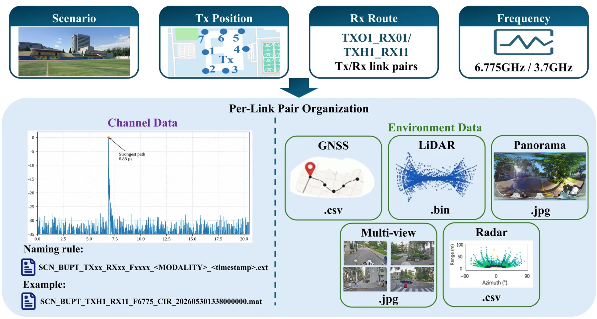
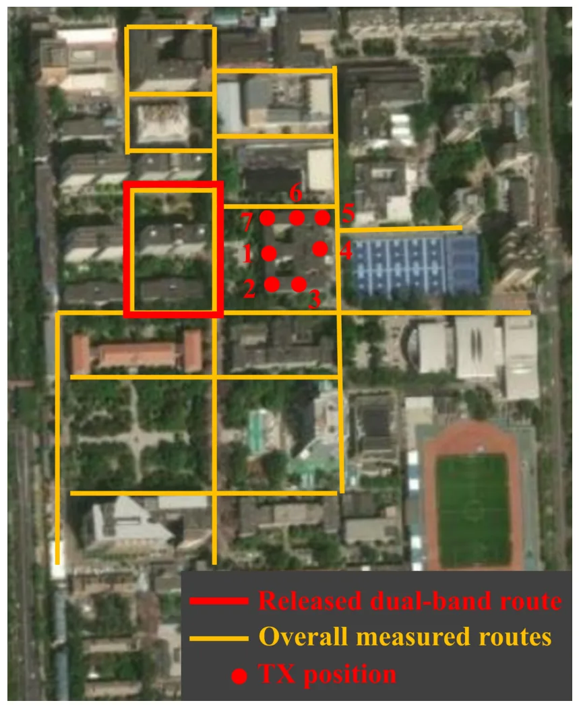
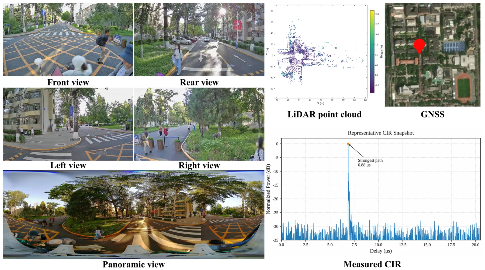
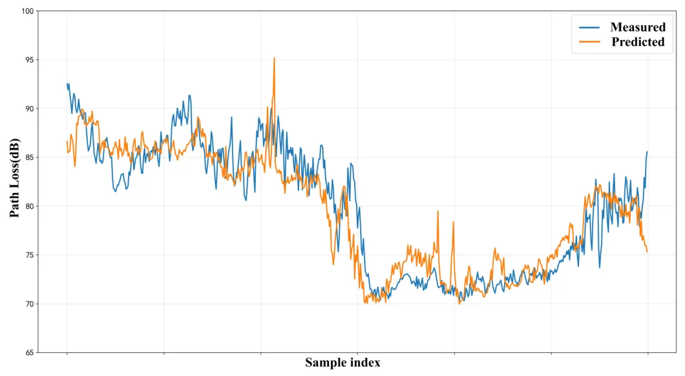
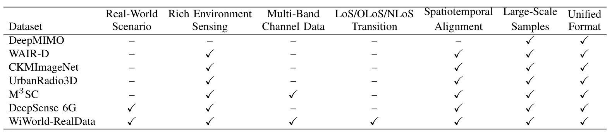
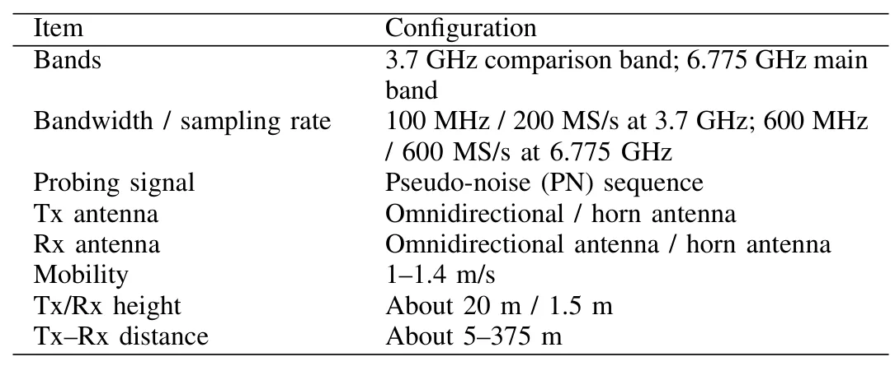

WiWorld-RealData：面向 6G 无线世界模型的真实多模态数据集WiWorld-RealData: A Real-World Multi-Modal Dataset for 6G Wireless World Models
主线是无线信道世界模型而非定位融合算法，但其 GNSS 轨迹与多传感器对齐数据对环境辅助定位、无线数字孪生和多模态数据组织有参考价值。
一句话工作总结
发布带 GNSS 轨迹、LiDAR、雷达、图像和双频信道响应对齐的真实校园移动路线多模态数据集。
摘要
WiWorld-RealData 是面向 6G digital twin channel 和无线世界模型的真实户外多频信道与多模态感知数据集。数据沿校园移动路线采集，包含 3.7 GHz 和 6.775 GHz 信道冲激响应，以及多视角图像、全景图、LiDAR 点云、毫米波雷达记录和 GNSS 轨迹。数据通过统一文件组织和 metadata manifest 建立 channel response、环境观测、时间戳、路线、天线配置与质量标志的样本级对应；当前公开一个双频代表路线，并展示环境辅助 path-loss 预测可达 2.02 dB MAE 和 2.69 dB RMSE。
Wireless world models aim to represent, predict, and reason about wireless propagation by jointly understanding physical environments and channel responses. Realizing such models in sixth-generation (6G) digital twin channels requires datasets that capture measured wireless responses and environment states under real-world propagation conditions. This paper presents WiWorld-RealData, a real-world outdoor multi-band channel and multi-modal sensing dataset collected along campus mobile routes. WiWorld-RealData provides measured channel impulse responses (CIRs) at 3.7 GHz and 6.775 GHz, together with multi-view images, panoramic images, light detection and ranging (LiDAR) point clouds, millimeter-wave (mmWave) radar records, and global navigation satellite system (GNSS) trajectories. Through unified file organization and metadata manifests, the dataset establishes sample-level correspondences among channel responses, environment observations, timestamps, route information, antenna configurations, and quality flags. The overall measurement campaign has produced 10 TB-level multi-modal field data. The current public release provides one representative dual-band route at 3.7 GHz and 6.775 GHz with complete channel-environment alignment, while the acquisition framework supports extension to more frequency bands and scenarios. A case study on environment-assisted path-loss prediction achieves a mean absolute error (MAE) of 2.02 dB and a root mean squared error (RMSE) of 2.69 dB, indicating that the aligned environment observations contain predictive information for channel variations. The dataset is available at https://scc.bupt.edu.cn/dataset-manage/datasets/44, and a ScienceDB mirror will be provided upon release.
中文解读摘录
- 英文题名：Pocket-SLAM: Rendering-Area-Aware Pruning for Memory-Efficient 3DGS-SLAM
- 作者：Leshu Li, Jie Peng, Yang Zhao
- 类别/来源：cs.CV；comment: 2026 IEEE International Conference on Robotics and Automation (ICRA)；采集 score=17；阅读优先级=9.3/10。
- 一句话总结：用“对有效渲染区域的贡献”而不是单点 opacity/gradient 启发式来剪枝高斯，在保持定位/建图精度的同时显著降低 3DGS-SLAM 运行内存。
- 为什么值得看：这是今天最贴近 SLAM 主线的工作，直接面向大尺度/自动驾驶场景中 3DGS-SLAM 高斯点持续累积的问题；摘要报告 EuRoC/KITTI 上超过 60% 内存降低和 2 倍以上 FPS 提升，且给出了开源仓库地址。后续应复核其 pruning 触发策略、实时开销、对回环/长期地图维护的影响，以及和现有 keyframe/visibility 管理的关系。
- 标签：3DGS-SLAM、内存剪枝、实时建图、自动驾驶
- 链接：abs / PDF
图表/页面预览
{kind=link}

{kind=link}

{kind=link}

{kind=link}

{kind=link}

{kind=link}
